[Paper Review] TRELLIS and TRELLIS.2: From Structured 3D Latents to Native Compact 3D Assets
- Paper
- Structured 3D Latents for Scalable and Versatile 3D Generation
Native and Compact Structured Latents for 3D Generation - Authors
- Jianfeng Xiang, Zelong Lv, Sicheng Xu, Yu Deng, Ruicheng Wang, Bowen Zhang, Dong Chen, Xin Tong, Jiaolong Yang
Jianfeng Xiang, Xiaoxue Chen, Sicheng Xu, Ruicheng Wang, Zelong Lv, Yu Deng, Hongyuan Zhu, Yue Dong, Hao Zhao, Nicholas Jing Yuan, Jiaolong Yang - Venue
- CVPR 2025 (Highlight); arXiv
- Links
- TRELLIS arXiv · TRELLIS.2 arXiv · TRELLIS code · TRELLIS.2 code
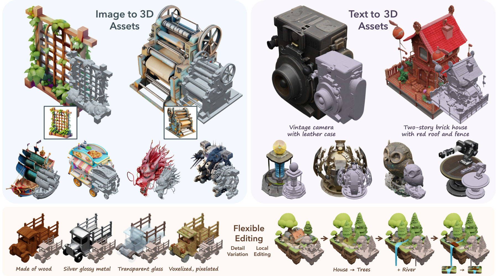
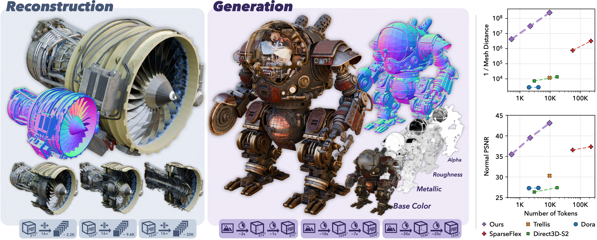
The Big Picture
These two papers are best read as one research arc. TRELLIS asks: what if we stop generating a single final 3D format and instead learn a structured latent space that can decode to Gaussians, radiance fields, or meshes? TRELLIS.2 then asks the harder follow-up: what if that structured latent space were built from native 3D asset data directly, including topology and PBR materials, instead of being mediated through multi-view image features and rendering losses?
A useful way to read the pair is that TRELLIS is a representation breakthrough for scalable 3D generation, while TRELLIS.2 is a representation cleanup for production-grade assets. The first one makes a good generative hub. The second one tries to make that hub closer to what artists, engines, and simulators actually want: high-resolution surfaces, arbitrary topology, and material parameters that survive export.
TRELLIS: The SLAT Moment
TRELLIS introduced Structured LATents, or SLAT. A 3D asset is represented as active voxels on a sparse grid, each carrying a local latent:
\[ \mathbf{z} = \left\{ (\mathbf{z}_i, \mathbf{p}_i) \right\}_{i=1}^{L}, \qquad \mathbf{z}_i \in \mathbb{R}^{C}, \quad \mathbf{p}_i \in \{0,\ldots,N-1\}^{3} \]
The active voxel positions \(\mathbf{p}_i\) describe coarse surface support; the local latents \(\mathbf{z}_i\) store appearance and shape details. This is a much better fit for 3D than a single global vector, but still regular enough for sparse transformers and flow models.
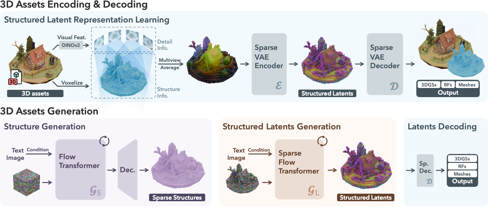
The encoding path is clever. TRELLIS renders dense multi-view images, extracts DINOv2 features, projects them back onto active voxels, and trains a sparse VAE. The same latent can be decoded into several formats:
- 3D Gaussians: each active voxel predicts local Gaussian offsets, colors, scales, opacities, and rotations.
- Radiance fields: local radiance volumes are represented with a compact factorization.
- Meshes: local FlexiCubes parameters and SDF-like values are decoded for surface extraction.
This versatility is the core contribution. Instead of betting that meshes, Gaussians, or radiance fields are the one true output, TRELLIS treats them as views of the same latent asset.
Generation also follows a clean two-stage design. First generate the sparse structure \(\{\mathbf{p}_i\}\), then generate the local latents \(\{\mathbf{z}_i\}\) attached to that structure. Both stages use rectified flow:
\[ \mathbf{x}(t) = (1-t)\mathbf{x}_0 + t\boldsymbol{\epsilon}, \qquad \mathcal{L}_{CFM} = \mathbb{E} \left[ \left\| v_\theta(\mathbf{x},t) - (\boldsymbol{\epsilon}-\mathbf{x}_0) \right\|_2^2 \right] \]
What TRELLIS Got Right
The best part of TRELLIS is locality. Local latents make detail controllable and editable. The paper's tuning-free applications, such as detail variation and region-specific editing, come almost for free once the representation separates coarse structure from local content.
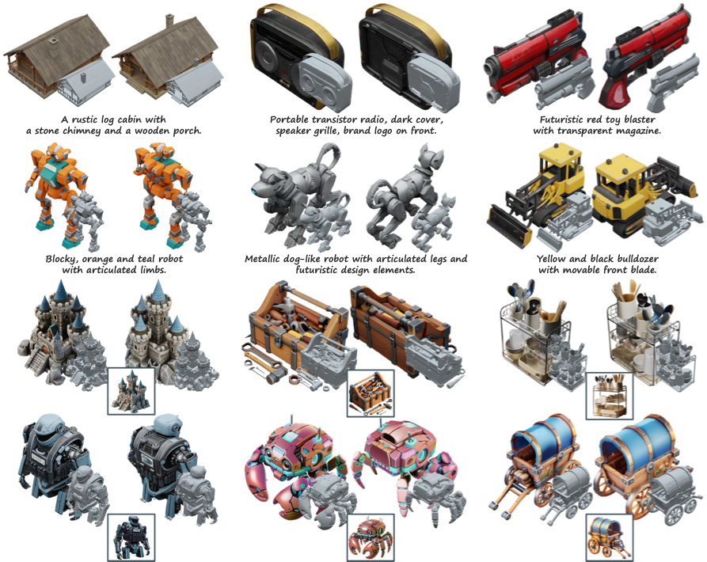
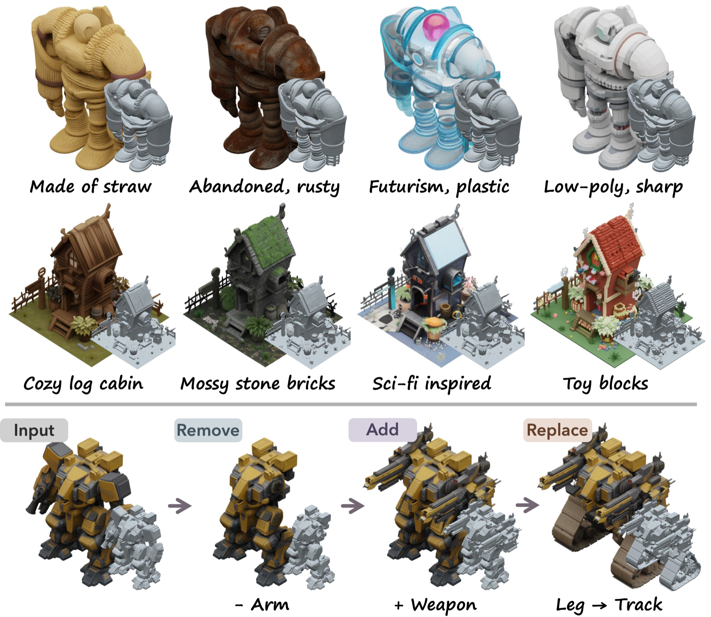
Where TRELLIS Still Feels Indirect
TRELLIS is powerful, but it is still not a fully native 3D asset representation. The latent is built through multi-view visual features and rendering supervision. That is a reasonable engineering compromise, but it can miss things that are not well observed by rendered views: enclosed surfaces, open/non-manifold topology, sharp internal structures, and true material attributes.
Put bluntly: TRELLIS gives us a great generative latent space, but not yet a perfect asset substrate. It is closer to "a representation that can render and export well" than "a representation that fully preserves the native 3D asset." TRELLIS.2 is basically the authors taking that limitation seriously.
| Reconstruction | PSNR ↑ | LPIPS ↓ | CD ↓ | F-score ↑ |
|---|---|---|---|---|
| 3DTopia-XL | 25.34 | 0.074 | 0.0128 | 0.9939 |
| CLAY | - | - | 0.0124 | 0.9976 |
| TRELLIS | 32.74 | 0.025 | 0.0083 | 0.9999 |
Higher is better for PSNR/F-score; lower is better for LPIPS/CD. Bold marks the strongest result in this compact comparison.
TRELLIS is already much stronger than prior latent representations. The point is not that it is weak. The point is that once it works, the next bottleneck becomes obvious: make the latent more native, more compact, and more material-aware.
TRELLIS.2: O-Voxel as a Native Asset Substrate
TRELLIS.2 introduces O-Voxel, an omni-voxel representation that stores both geometry and material attributes on sparse voxels:
\[ \mathbf{f} = \left\{ ( \mathbf{f}^{shape}_i, \mathbf{f}^{mat}_i, \mathbf{p}_i ) \right\}_{i=1}^{L} \]
This is the big shift. Instead of learning latents from multi-view rendered features, TRELLIS.2 first defines a native 3D asset representation that can be converted to and from meshes and PBR texture attributes directly. Then it learns a compact latent space over that representation.
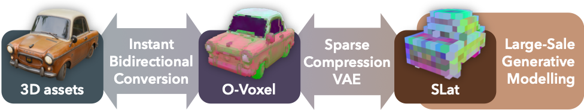
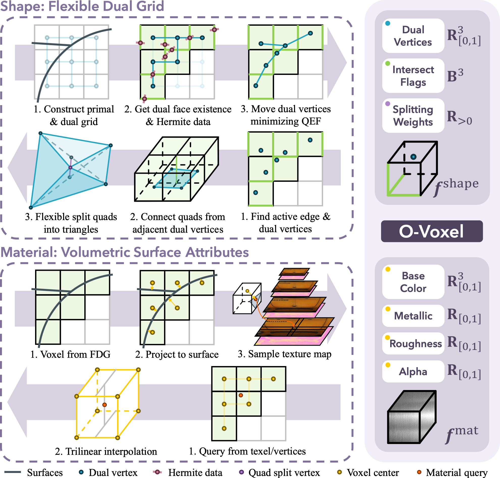
Flexible Dual Grid
For geometry, O-Voxel uses a flexible dual grid. There is one dual vertex per active voxel cell, and quad faces connect adjacent dual vertices where primal grid edges intersect the input mesh. Unlike SDF-style iso-surfaces, this does not require the asset to be watertight or manifold.
The dual vertex is solved with a quadratic error function:
\[ \min_{\mathbf{v}\in voxel} e(\mathbf{v}) = \sum_i d_{\Pi,i}^{2} + \lambda_{bound} \sum_j d_{L,j}^{2} + \lambda_{reg}d_{\bar{\mathbf{q}}}^{2} \]
The first term is the classic dual-contouring plane fitting term from Hermite data. The boundary term helps open surfaces; the regularization keeps the vertex stable. Each active voxel stores dual vertex position, edge-intersection flags, and splitting weights. That is a small amount of local information, but it is enough to reconstruct sharp and topologically awkward surfaces.
PBR Material as Voxel Attributes
For material, TRELLIS.2 stores base color, metallic, roughness, and opacity:
\[ \mathbf{f}^{mat}_i = (\mathbf{c}_i, m_i, r_i, \alpha_i) \]
This matters because a lot of 3D generation work treats texture as a postprocess: generate shape, render multi-view images, fuse/bake textures. TRELLIS.2 moves material generation into the same 3D latent domain as geometry. That is much closer to how assets are consumed in real tools.
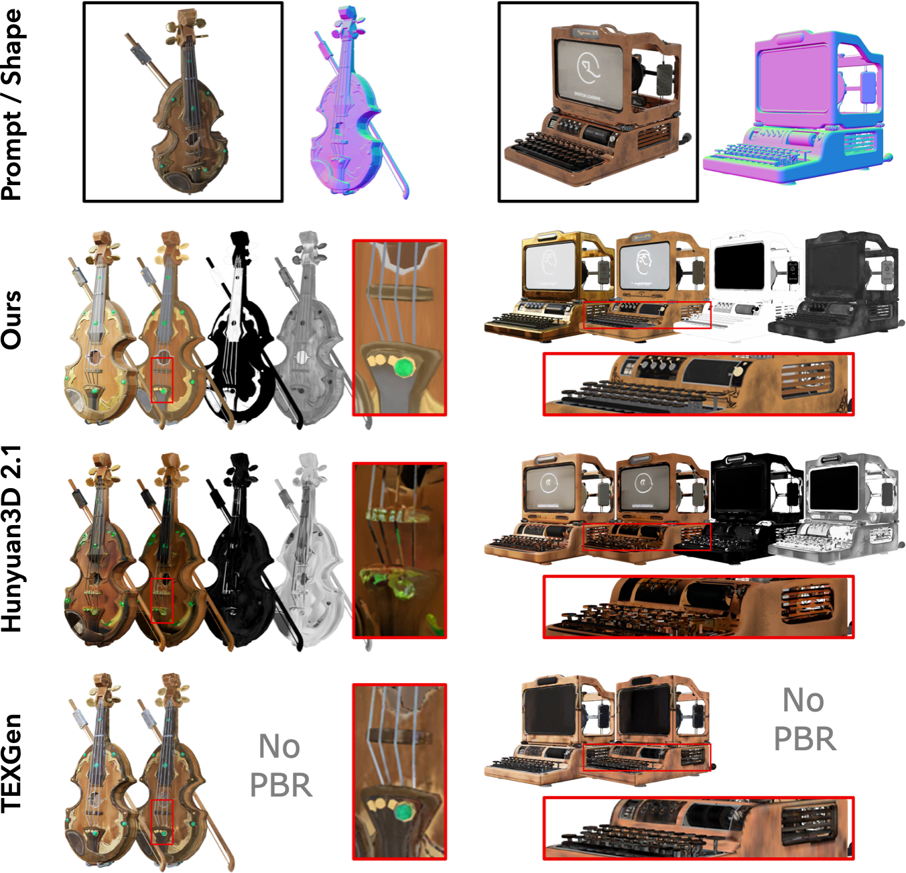
SC-VAE: Compact Without Throwing Away Detail
The second major idea in TRELLIS.2 is the Sparse Compression VAE. TRELLIS-style structured latents are high fidelity, but token count becomes painful. TRELLIS.2 uses sparse convolutional U-Net style compression with residual autoencoding shortcuts to reach 16× spatial downsampling.
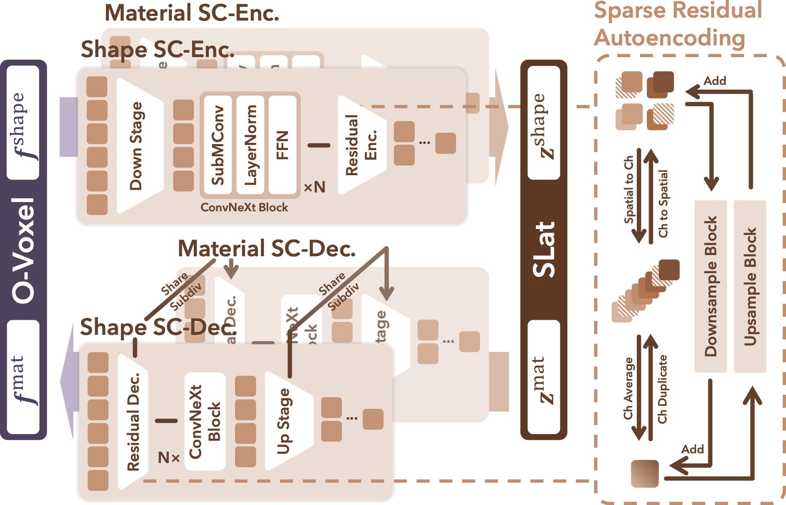
The residual shortcut is conceptually simple. During downsampling, child voxel features are rearranged into channel groups instead of being blindly averaged away:
\[ F^{raw}_{coarse} = \operatorname{stack} (F_{child_1},\ldots,F_{child_8}), \qquad F_{coarse} = \operatorname{avg\_groups}(F^{raw}_{coarse}) \]
During upsampling, the process is mirrored with channel-to-space redistribution. This is the kind of representational engineering that sounds minor until you try to compress sparse 3D detail aggressively. The ablation shows it is not minor.
Generation: From Two Stages to Three
TRELLIS generates sparse structure and local latents. TRELLIS.2 extends that into three stages:
- Sparse structure generation: predict the coarse sparse voxel layout.
- Geometry generation: generate shape latents over the active structure.
- Material generation: generate PBR material latents conditioned on geometry and the input image.
Architecturally, this is cleaner than it may sound. TRELLIS.2 benefits from compact latents, so it can use more vanilla DiT-style flow models rather than elaborate packing tricks. Each DiT is about 1.3B parameters, and the full system is about 4B parameters.
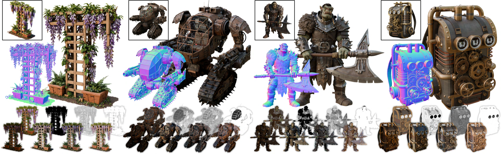
Quantitative Evidence
The most convincing comparison is not just "TRELLIS.2 looks better." It is that TRELLIS.2 gets much better reconstruction fidelity while staying compact.
| Shape reconstruction | #Token | Dec. s ↓ | Toys MD ↓ | Toys PSNR-N ↑ | Sketchfab MD ↓ | Sketchfab PSNR-N ↑ |
|---|---|---|---|---|---|---|
| TRELLIS | 9.6K | 0.108 | 85.07 | 30.29 | 49.20 | 24.31 |
| SparseFlex 1024 | 225K | 3.21 | 0.3132 | 37.34 | 0.7593 | 32.12 |
| TRELLIS.2 1024 | 9.6K | 0.301 | 0.0042 | 43.11 | 0.0170 | 35.26 |
The important comparison is the token budget: TRELLIS.2 keeps TRELLIS-level compactness while moving mesh-distance error into a much lower range.
The key comparison is TRELLIS vs TRELLIS.2 at roughly the same token count. TRELLIS.2 is not just a little better; on mesh-distance metrics it is operating in a different regime. That makes sense because TRELLIS.2's representation is directly tied to mesh geometry rather than inferred through rendered-view features.
| Image-to-3D | CLIP ↑ | CLIP-N ↑ | ULIP-2 ↑ | Uni3D ↑ | Pref % ↑ | Pref-N % ↑ |
|---|---|---|---|---|---|---|
| TRELLIS | 0.876 | 0.748 | 0.470 | 0.414 | 6.40% | 2.82% |
| Hunyuan3D 2.1 | 0.869 | 0.753 | 0.474 | 0.427 | 13.3% | 7.51% |
| TRELLIS.2 | 0.894 | 0.758 | 0.477 | 0.436 | 66.5% | 69.0% |
The preference columns are the most legible signal here: visual quality and native-material handling show up more strongly in human comparisons than in CLIP-like scores.
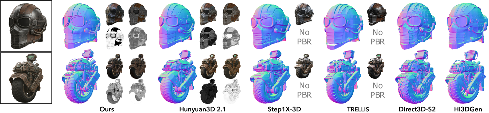
Why This Matters for Real Work
For researchers, TRELLIS and TRELLIS.2 are useful because they move the discussion away from "which final representation should the generator output?" and toward "what latent substrate makes 3D generation scalable?" That is the right question. Final formats will keep changing. The latent is where the model learns.
For developers, the distinction is practical. TRELLIS can export Gaussians, radiance fields, meshes, PLY, and GLB. It is versatile and good for experimentation. TRELLIS.2 is more asset-oriented: image to PBR mesh, O-Voxel to GLB, texture generation for a given mesh, and explicit PBR attributes. The README reports about 3s for 5123, 17s for 10243, and 60s for 15363 generation on an H100. That is serious model scale, but the output path is closer to real content pipelines.
For artists, the most important shift is material and topology. TRELLIS gives impressive visual assets, but TRELLIS.2's PBR materials and arbitrary-topology handling are closer to the language of DCC tools and game engines. Open leaves, cloth-like surfaces, mechanical internal structures, glass, roughness, metalness, and relighting are not side details. They are the difference between a demo object and an asset that can survive a lighting or editing pass.
There is still plenty of engineering friction. TRELLIS.2 currently targets Linux, requires an NVIDIA GPU with at least 24GB VRAM, and depends on CUDA 12.4 plus specialized packages such as O-Voxel and FlexGEMM. Also, its GLB export note is worth paying attention to: alpha is preserved, but transparency may need manual material connection in downstream tools. These are normal early-system issues, but they matter if you plan to use it outside a research demo.
Strengths
Representation-first thinking
Both papers understand that the latent space is the product. Better diffusion or flow models help, but only after the representation stops fighting the asset.
Locality is doing real work
Sparse local latents make generation, editing, compression, and scaling much more natural than global vectors or flat token sets.
TRELLIS.2 is more native
O-Voxel stores geometry and PBR material attributes directly. That is a stronger contract with the downstream asset pipeline.
The systems are public
The papers are not just benchmark PDFs. There are model releases, examples, demos, data tooling, and training code paths.
Limitations and Open Questions
First, neither paper solves semantics. A generated asset can have excellent geometry and PBR material, but it still may not know that a wheel should rotate, a drawer should open, or a character should be rigged. Asset quality and functional structure are adjacent, not identical.
Second, voxel resolution still bounds detail. TRELLIS.2 says this explicitly: features smaller than the voxel size can alias, and multiple close surfaces in the same voxel can blur material attributes. O-Voxel is much better than field-based assumptions for topology, but it is not magic.
Third, PBR correctness is hard to verify. Base color, metalness, roughness, and opacity are useful, but a perceptually good render is not the same as physically accurate material decomposition. Artists will still need inspection and correction tools.
Key Takeaways
- TRELLIS is the turning point: it shows that sparse structured latents can be a scalable, versatile hub for 3D generation.
- TRELLIS.2 is the correction: it replaces indirect multi-view feature grounding with O-Voxel, a more native geometry and material representation.
- Compactness matters as much as fidelity: a beautiful representation that needs too many tokens will not scale well as a generative model.
- PBR material generation is not cosmetic: it is what moves a generated object closer to an actual asset.
- The next frontier is semantics: topology, materials, and export are getting better; rigging, parts, affordances, and edit constraints remain open.
Citation: Xiang, J., Lv, Z., Xu, S., Deng, Y., Wang, R., Zhang, B., Chen, D., Tong, X., & Yang, J. (2024). Structured 3D Latents for Scalable and Versatile 3D Generation. arXiv:2412.01506 / CVPR 2025 Highlight.
Xiang, J., Chen, X., Xu, S., Wang, R., Lv, Z., Deng, Y., Zhu, H., Dong, Y., Zhao, H., Yuan, N. J., & Yang, J. (2025). Native and Compact Structured Latents for 3D Generation. arXiv:2512.14692.